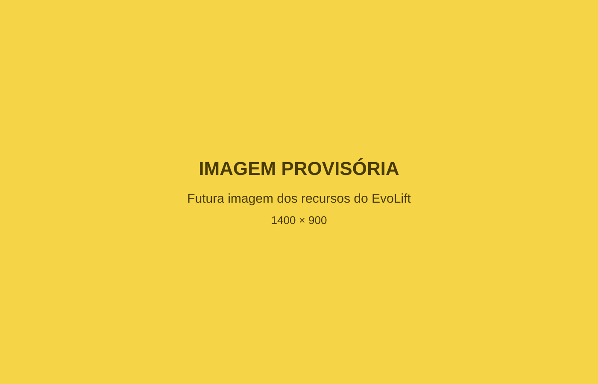

EvoLift
Tecnologia para tornar a evolução mais visível.
O EvoLift organiza informações relacionadas aos exercícios e ajuda o paciente a acompanhar seu processo ao longo do tempo.
Como parte do acompanhamento da Dra. Deyvla, o aplicativo poderá contribuir para uma rotina mais organizada e consciente.
Agendar avaliação pelo WhatsAppUm apoio que acompanha o paciente além da consulta.
Mudanças relacionadas à atividade física acontecem ao longo do tempo. O EvoLift ajuda a manter informações importantes organizadas, facilitando o registro dos exercícios e a consulta da evolução.
O aplicativo não substitui o acompanhamento profissional. Ele funciona como uma ferramenta de apoio para tornar o processo mais claro e organizado.
Registrar hoje ajuda a compreender a evolução de amanhã.
Mais organização para compreender o processo.
Clareza
As informações ficam reunidas de forma mais organizada.
Continuidade
Os registros ajudam a observar o processo ao longo do tempo.
Consciência
Consultar o histórico permite reconhecer avanços e dificuldades.
Apoio
Os dados registrados podem contribuir para conversas mais objetivas durante o acompanhamento.
Recursos que ajudam a acompanhar a evolução.

Registro de exercícios
Organize os exercícios realizados durante a rotina de treino.
Registro de cargas
Registre as cargas utilizadas para acompanhar mudanças ao longo do tempo.
Histórico de evolução
Consulte os registros anteriores e observe o desenvolvimento do processo.
Organização do treino
Mantenha informações importantes reunidas de forma acessível e estruturada.
Uma rotina simples de registro e acompanhamento.
-
01 — Realizar o exercício
O paciente executa o exercício conforme sua rotina e as orientações recebidas.
-
02 — Registrar as informações
O exercício e a carga utilizada são registrados no EvoLift.
-
03 — Consultar o histórico
Os registros anteriores ajudam a visualizar o processo ao longo do tempo.
-
04 — Conversar sobre a evolução
As informações organizadas podem apoiar conversas sobre avanços, dificuldades e possíveis ajustes.
A evolução acontece passo a passo.
Nem todas as mudanças aparecem de um dia para o outro. O histórico permite observar o caminho percorrido e compreender como a rotina se transforma ao longo do tempo.
Início
Primeiros registros e definição de uma referência inicial.
Continuidade
Organização das informações durante a rotina.
Evolução
Consulta do histórico e observação do processo.
Pessoa, acompanhamento e tecnologia trabalhando juntos.
Paciente
Participa ativamente do processo e registra informações da sua rotina.
Dra. Deyvla
Orienta o acompanhamento conforme avaliação profissional e necessidades individuais.
EvoLift
Ajuda a organizar exercícios, cargas e histórico de evolução.
Tecnologia como apoio, cuidado como responsabilidade.
O EvoLift não substitui consulta, diagnóstico, avaliação médica, orientação profissional ou serviços de urgência e emergência.
As decisões relacionadas à saúde e à atividade física devem considerar as necessidades e condições individuais.
Conheça uma proposta de acompanhamento apoiada pela tecnologia.
Entre em contacto para receber informações sobre o acompanhamento da Dra. Deyvla e o papel do EvoLift nesse processo.
Agendar avaliação pelo WhatsApp